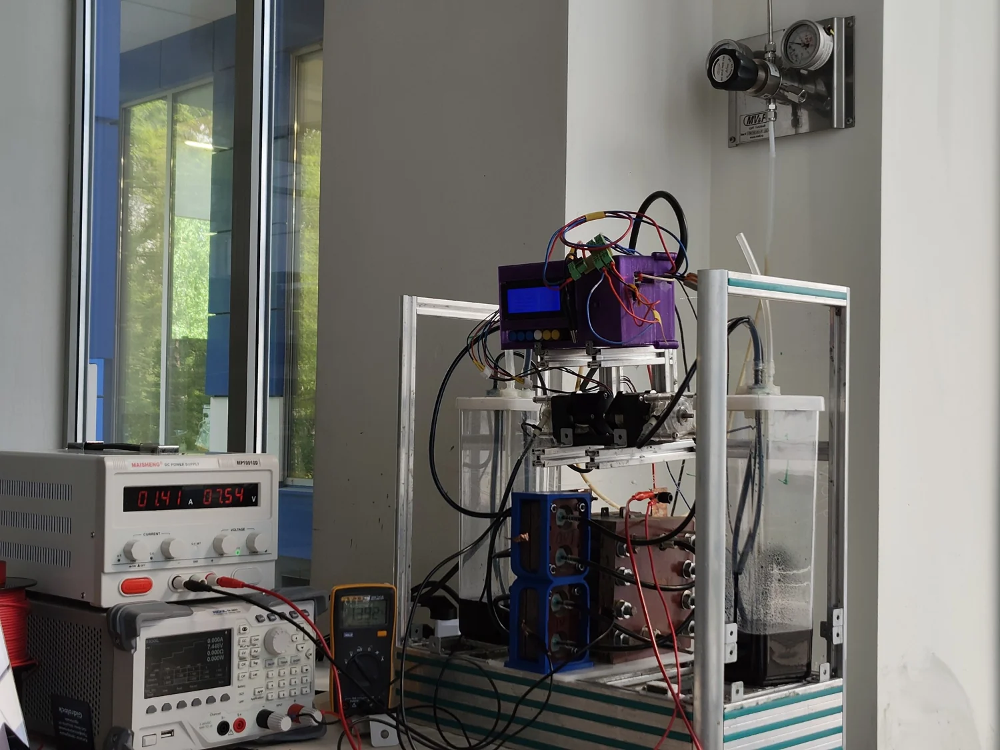

Vanadium redox flow battery / laboratory rigMSc thesis · In progress
A digital twin, grounded in the lab.
I built a Simulink model of a five-cell vanadium flow battery, fitted it to experimental data, and investigated which parameters the measurements can actually determine.
5 cellslaboratory stack
65 mVmean Simulink voltage error